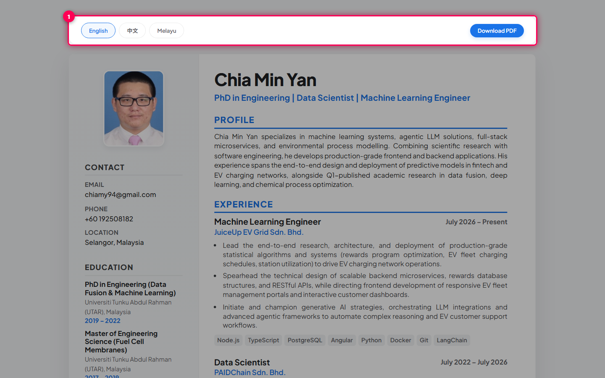
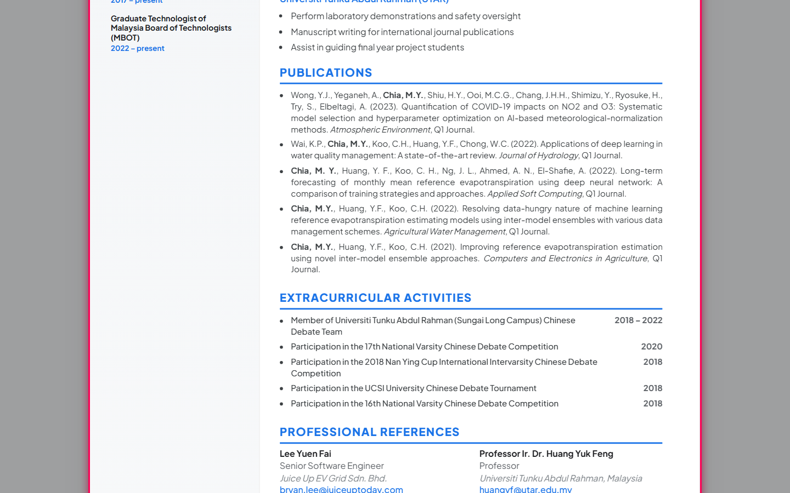
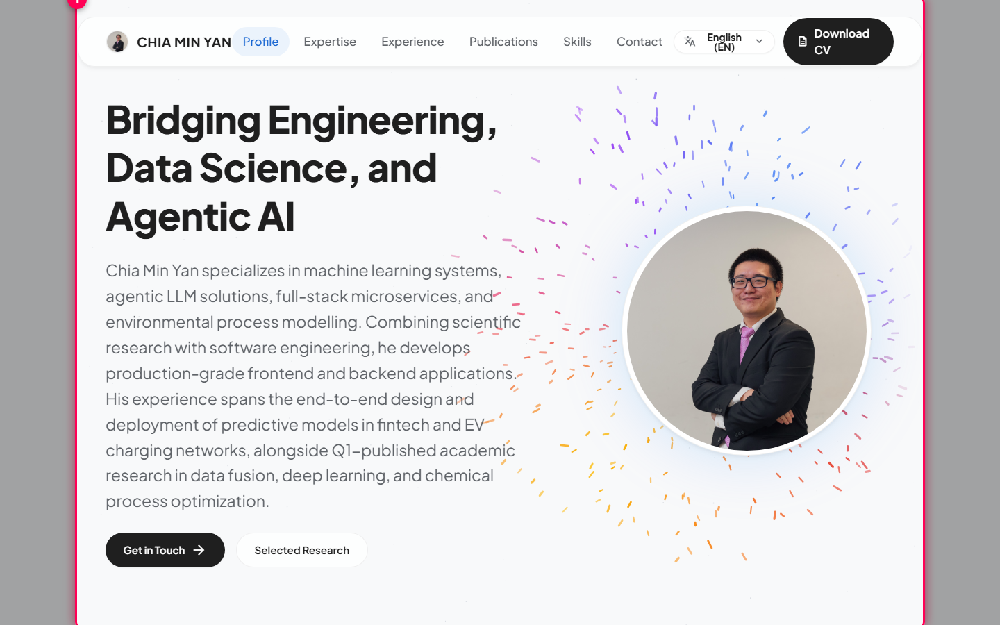
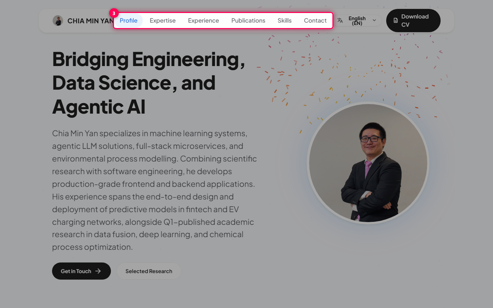
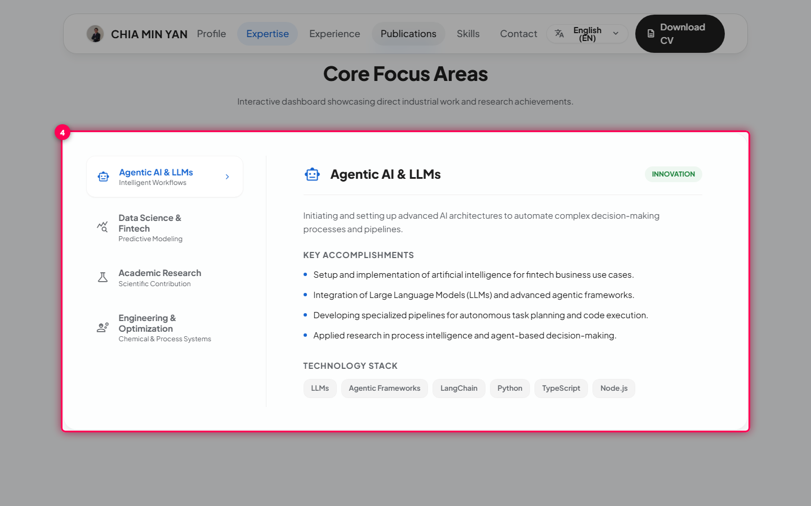
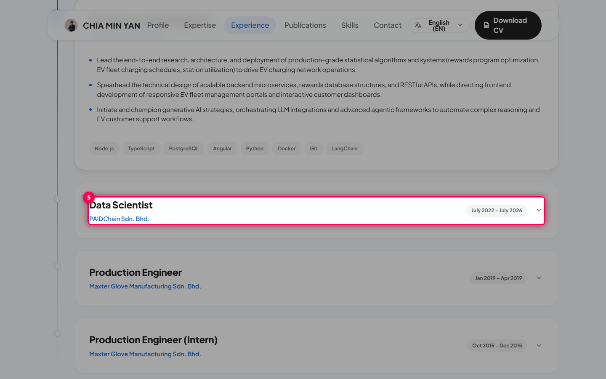
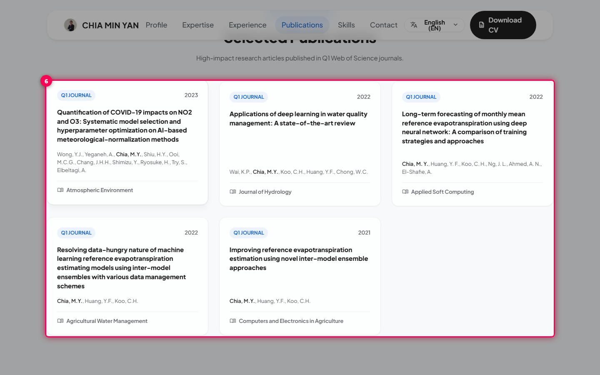
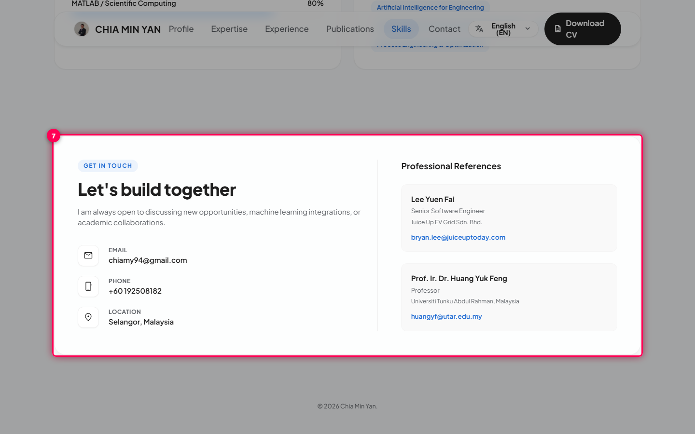
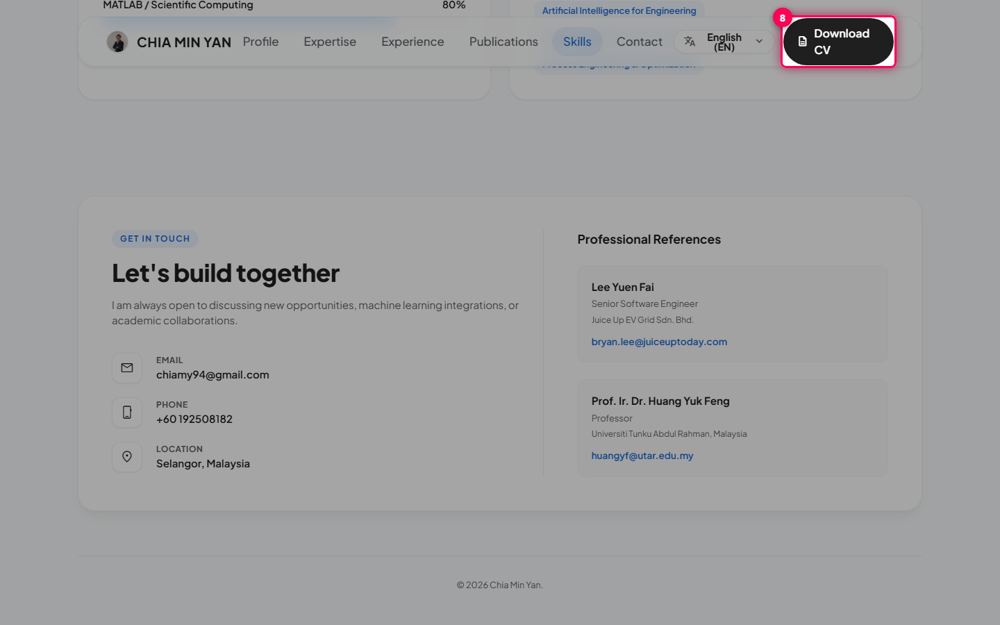
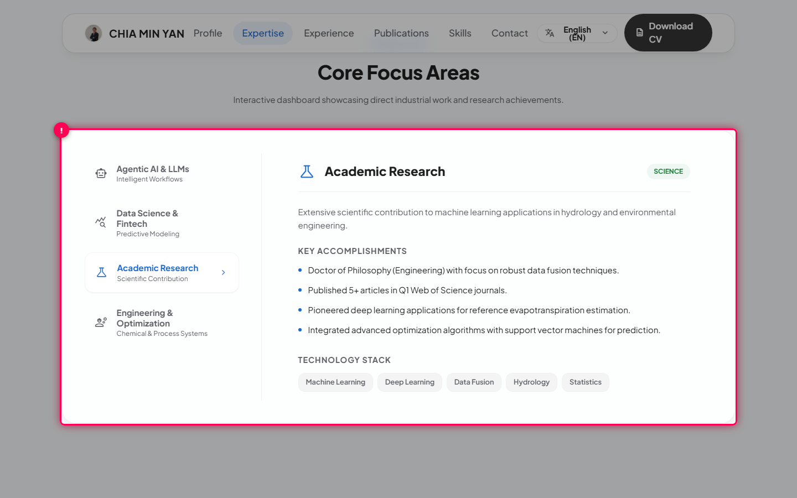

Viewing and Downloading the CV
Read the two-page A4 curriculum vitae, switch its language, and download it as a PDF.
Prerequisites
- You opened the CV from Download CV on the portfolio, or went straight to
/#/cv. - Your browser allows downloads from this site.
Find the CV controls
Use the bar at the top of the page to choose a language (English, 中文, Melayu) or click Download PDF.
The current language is highlighted. The bar is only on screen: it does not appear in the printout or the PDF.

Read page 1: profile, education, skills and career
The left column of page 1 has contact details, degrees and core skills. The right column lists professional experience, newest first.
Page 1 shows the CV photo, 3 degrees, 12 core skills and every role, each with its dates.
Read page 2: research, publications and references
Scroll down to page 2 for research experience, selected publications, extracurricular activities, affiliations and references.
Page 2 lists 5 publications with Dr. Chia's name in bold, plus 2 references.

Change the CV language
Click 中文 or Melayu in the top bar.
The whole CV is translated without reloading the page, and it still fits on exactly two A4 pages.
Download the CV as a PDF
Click Download PDF and keep the tab open until the file has downloaded.
The button changes to Generating PDF... for a few seconds, CV_Chia_Min_Yan.pdf is downloaded, and the button goes back to Download PDF so you can download again.
The PDF is generated in your browser at high resolution, so it can take a few seconds on slower devices.
Troubleshooting & Common Scenarios
| Scenario | Message Displayed | Resolution |
|---|---|---|
| The Download PDF button says "Generating PDF..." | Generating PDF... |
The PDF is being built in your browser. This usually takes 2–3 seconds. Stay on the tab; the button comes back once the download starts. |
| Printing with Ctrl/Cmd + P adds headers or a third page | The print preview shows browser headers or spills onto a 3rd page. |
Use Download PDF instead: it always gives a clean two-page A4 PDF. If you do print, turn off "Headers and footers" and set the margins to "Default". |
| The CV opened in a different language from the portfolio | The language in the CV does not match the portfolio. |
Open the CV with Download CV on the portfolio: the link carries your current language (?lang=). You can also pick a language in the CV's top bar. |
Exploring the Portfolio
Find your way around Dr. Chia Min Yan's portfolio: switch the interface language, jump between sections, browse expertise and career history, and open the printable CV.
Prerequisites
- You are using an up-to-date browser (Chrome, Edge, Firefox or Safari).
- You are online, so the page can load its language files.
Read the profile introduction
Start at the top of the page. The introduction summarises the profile and has two shortcut buttons: Contact and Publications.
The name, a short bio and the two shortcut buttons are visible.

Change the display language
Click the language button (the translate icon) in the header, then pick English, 中文 or Melayu.
The page is translated straight away, with no reload, and the header shows the language you picked. Your choice is remembered for your next visit.
The printable CV opens in whichever language is active when you open it.
Jump to a section
Use the links in the header (Profile, Expertise, Experience, Publications, Skills, Contact) to scroll to that part of the page.
The page scrolls to the section you clicked.

Browse areas of expertise
In Expertise, click a topic on the left (for example Academic Research) to see its accomplishments and tech stack.
The topic you clicked is highlighted, and the panel on the right shows its Key Accomplishments and Technology Stack.

Expand a role in the career timeline
In Experience, click a role (or select it with Tab and press Enter or Space) to show its achievements and technologies.
The card opens to show the achievements and technology tags. Click it again to close it. The most recent role is open by default.

Browse peer-reviewed publications
Scroll to Publications to see the selected journal papers, with their tier, year, authors and journal.
Each card lists the full author list, with Dr. Chia's name in bold.

Get in touch
In Contact, click the email address or phone number to open your mail or phone app. Professional references are listed alongside.
Your email app (or dialler) opens with the address already filled in.

Open the printable CV
Click Download CV in the header.
The two-page A4 CV opens in a new tab, in the language you are currently using, ready to download as a PDF.

Troubleshooting & Common Scenarios
| Scenario | Message Displayed | Resolution |
|---|---|---|
| The language does not change when I pick 中文 or Melayu | The page stays in the current language and the header label does not change. |
The language file could not be downloaded (for example, you went offline). The page keeps working in the current language. Check your connection, reload the page and pick the language again. |
| I cannot see the topic list in Expertise on my phone  |
On narrow screens the left-hand topic list is replaced by a carousel. |
Use the ‹ / › arrows or tap one of the dots under the topic name to move between topics. |